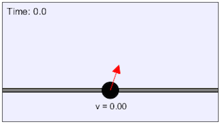

This animation simulates a ball being pulled by an external force along a rod. Students can adjust the magnitude and angle of the force. They are asked to derive an expression for the acceleration and normal force in terms of the magnitude and angle.